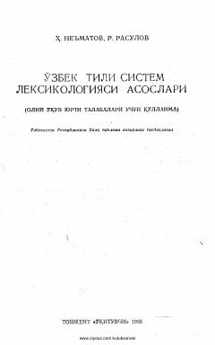

OTOʻzbek tilining sistem leksikologiyasi asoslari va nazariy masalalariga bagʻishlangan oʻquv qoʻllanma.
Mazkur oʻquv qoʻllanma oliy oʻquv yurtlari talabalari uchun moʻljallangan boʻlib, oʻzbek tilining sistem leksikologiyasi asoslari va nazariy masalalarini yoritadi. Unda til va nutq hodisalarini farqlash, sistem tilshunoslik tushunchalari hamda leksikologiyaning ilmiy-nazariy asoslari batafsil tahlil qilingan. Kitob zamonaviy oʻzbek tilshunosligida tizimli yondashuvni chuqur oʻrganishga xizmat qiladi.